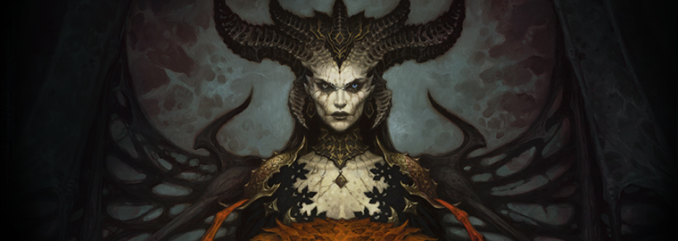

1 / 2

Lilith daughter of Mephisto
2 / 2

Lilith mother of nephalem
Dear Diablo family, Thank you all for a great BlizzCon. We unveiled Diablo IV with our announce cinematic, establishing the tone for our overall creative vision moving forward. We hope you all dug that.
We also showed you our gameplay trailer, showcasing our classes, monsters, and open world, and invited you to take the first step in this journey toward Diablo IV together. We can tell from all the questions and excitement we’ve seen online and in-person that you are eager to find out more.
The lines to our demo stations and Dark Gallery were packed all weekend long and we were floored by the overall reception—especially from long-time Diablo players. We were blown away by how often we met people who came back to play the demo again and again. The stories you shared with us about Diablo and what this series means to you moved us and inspire us to do our best.
We’ve been taking this week to assess and discuss our takeaways from BlizzCon, and we love all the deep discussions happening around the art, features, systems, and world of Diablo IV. We’re also excited about a cool update we’re planning for you in February of next year. It will be the first in a series of quarterly updates where we’ll share behind-the-scenes looks at our progress going forward.
We also know that one topic is burning hotter than the rest. We want you to know that we are having the same conversations about items and stats that you are having—whether on the official discussion threads or external sites, we read it all! Getting this right is at the top of our minds, and in the coming weeks our lead systems designer David Kim will provide a few clarifications, share some of his thoughts, and address some of your open questions. We hope you check it out and let us know what you think
We also know that one topic is burning hotter than the rest. We want you to know that we are having the same conversations about items and stats that you are having—whether on the official discussion threads or external sites, we read it all! Getting this right is at the top of our minds, and in the coming weeks our lead systems designer David Kim will provide a few clarifications, share some of his thoughts, and address some of your open questions. We hope you check it out and let us know what you think
November 13, 2019
Source: Blizzard
Back to news